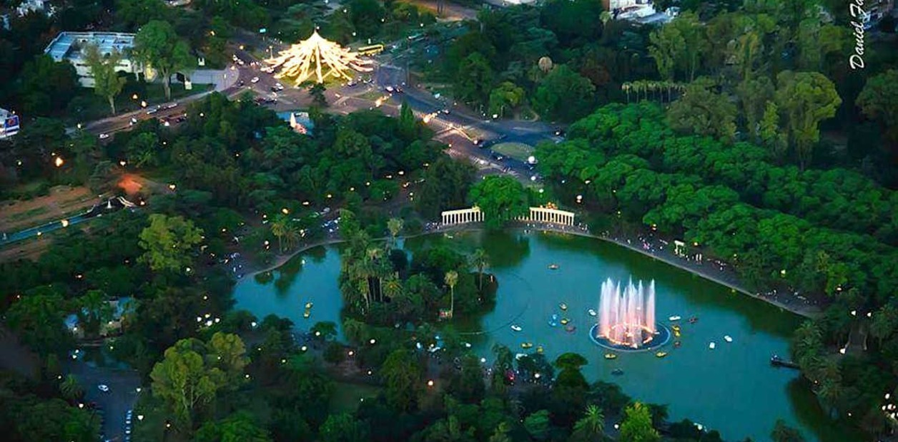
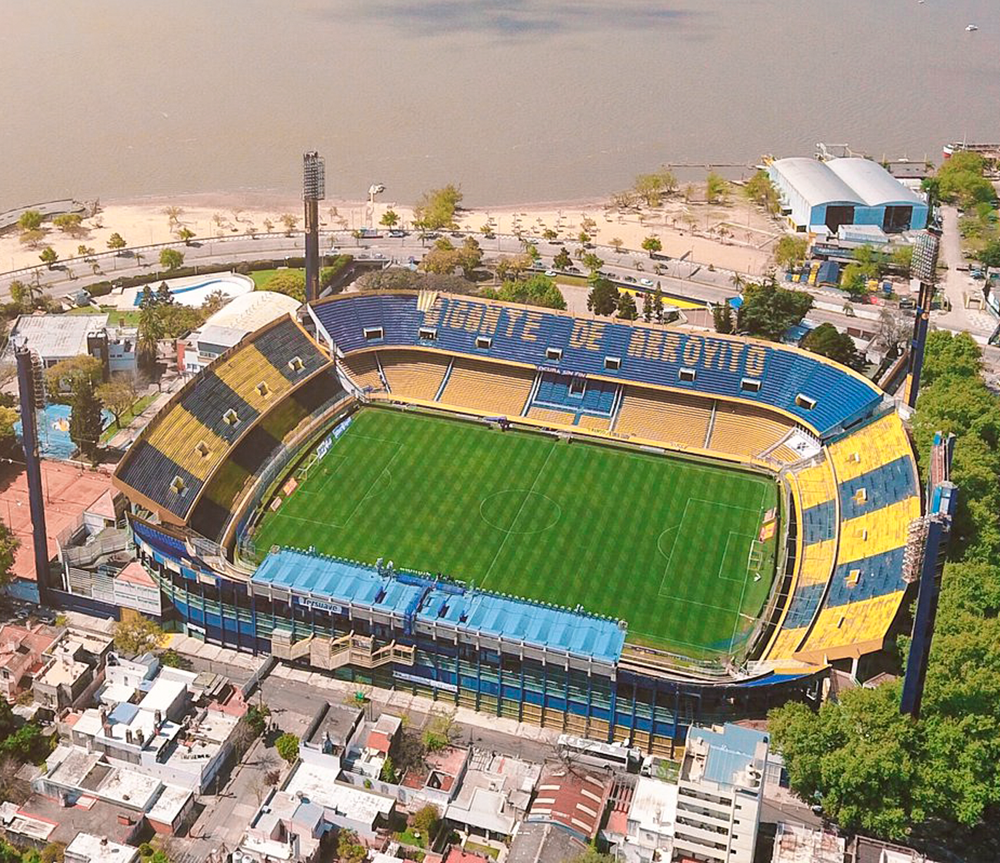
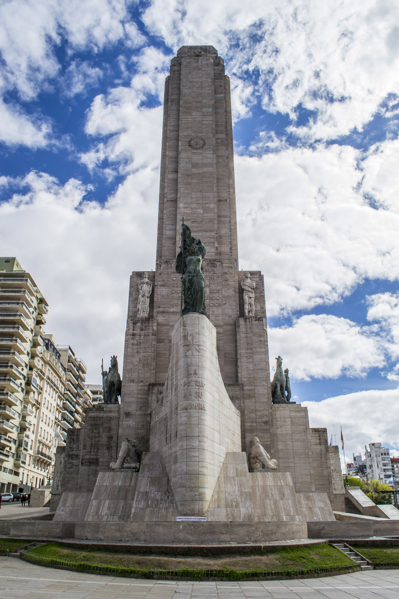
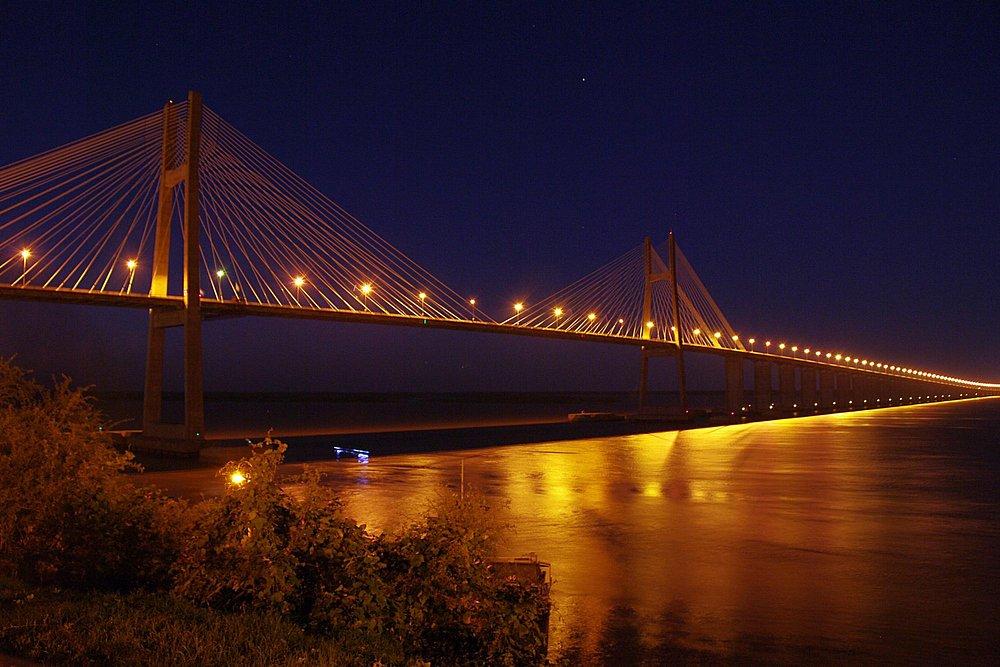

Historia y memoria
Rosario en clave femenina
Un recorrido para descubrir mujeres que dejaron huella en la identidad política, cultural y social de la ciudad.
Encuentro: Pasaje Juramento, Buenos Aires 750Rosario, Santa Fe
Rosario a la Carta
Recorridos guiados para mirar la ciudad con otros ojos: historias ocultas, barrios con identidad, patrimonio vivo y el encanto de una visita pensada para vos.
Tu guía
Soy guía turístico en Rosario y diseño recorridos que conectan arquitectura, memoria, fútbol, personajes populares y pequeñas grandes historias urbanas.
Cada salida puede adaptarse a visitantes, rosarinos curiosos, escuelas, grupos familiares, empresas o viajeros que quieren una ciudad contada de cerca.

Catálogo de experiencias
Historia y memoria
Un recorrido para descubrir mujeres que dejaron huella en la identidad política, cultural y social de la ciudad.
Encuentro: Pasaje Juramento, Buenos Aires 750
Barrios
Una caminata por trazas, pasajes y vida cotidiana para entender una zona pensada como barrio jardín.
Encuentro: a coordinar al reservar
Arquitectura
Palacetes, bulevares, esculturas y rastros de una Rosario que quiso mostrarse moderna, elegante y pujante.
Encuentro: Córdoba y Oroño
Fútbol y barrio
El recorrido natal por el barrio de Ángel Di María: infancia, club, pertenencia y sueños que salieron de Rosario al mundo.
Encuentro: Cavia y Baigorria
Patrimonio barrial
La rica historia y el patrimonio cultural de Alberdi, antiguo pueblo con una historia vibrante y única, a casi un siglo y medio de transformaciones.
Encuentro: Bv. Rondeau 1890
Centro histórico
Una lectura del corazón fundacional de Rosario y su vínculo con el Monumento, la plaza cívica y los edificios históricos.
Encuentro: Córdoba y Laprida
Ciudad elegante
Casonas, tiendas, cafés, instituciones y detalles arquitectónicos de una de las postales urbanas más queridas.
Encuentro: Córdoba y Corrientes
Símbolo nacional
La historia viva del Monumento: secretos, arquitectura y el legado de quienes lo soñaron y construyeron.
Encuentro: Pasaje Juramento, Buenos Aires 750
Fútbol y origen
Recorrido por el barrio natal de Lionel Messi, entre relatos de infancia, potrero, club y memoria popular.
Encuentro: a coordinar al reservarHistoria urbana
Historias del barrio Pichincha, hoy Alberto Olmedo: vida nocturna, transformaciones urbanas y personajes inolvidables.
Encuentro: Avenida del Valle y CallaoPostales reales


Para coordinar
Los recorridos pueden organizarse para una persona, grupos reducidos, instituciones educativas, turistas de paso o equipos que buscan una experiencia cultural distinta.
La duración se coordina según el recorrido, el grupo y el ritmo de la salida.
Sí. Se pueden armar propuestas privadas, grupales o institucionales.
Sí. La propuesta puede enfocarse en historia, arquitectura, fútbol, patrimonio, barrios o identidad rosarina.
Reserva y contacto
Escribime por WhatsApp o completá la consulta con tus datos. Te respondo para confirmar disponibilidad, punto de encuentro y detalles de la salida.